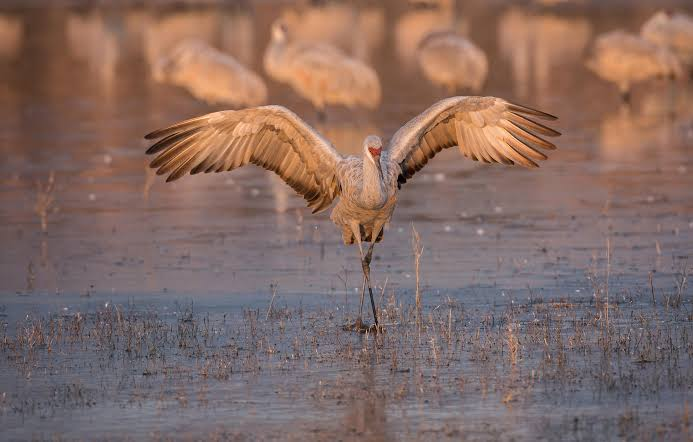

Crane
Birds
Cranes are a family, the Gruidae, of large, long-legged, and long-necked birds in the group Gruiformes. The 15 species of cranes are placed in 3 genera, Antigone, Balearica, and Grus. Unlike the similar-looking but unrelated herons, cranes fly with necks outstretched, not pulled back.
Scientific name: Gruidae
Family: Gruidae; Vigors, 1825
Length: Grey crowned crane: 100 – 110 cm Encyclopedia of Life
Height: Common crane: 100 – 130 cm, Grey crowned crane: 100 cm, Blue crane: 100 – 120 cm
Mass: Common crane: 3 – 6.1 kg, Grey crowned crane: 3.5 kg, Blue crane: 3.6 – 6.2 kg
Wingspan: Common crane: 1.8 – 2.4 m, Grey crowned crane: 2 m, Blue crane: 1.8 – 2 m
Crane, any of 15 species of tall wading birds of the family Gruidae (order Gruiformes). Superficially, cranes resemble herons but usually are larger and have a partly naked head, a heavier bill, more compact plumage, and an elevated hind toe.
In flight the long neck is stretched out in front, the stiltlike legs trailing out behind.
Cranes form an ancient group, the earliest fossils having been recovered from Eocene deposits in North America. Living forms are found worldwide except in South America, but populations of many are endangered by hunting and habitat destruction.
These graceful terrestrial birds stalk about in marshes and on plains, eating small animals of all sorts as well as grain and grass shoots. Two olive-gray eggs spotted with brown are laid in a nest of grasses and weed stalks on drier ground in marsh or field.
The same nest may be used year after year. The brownish, downy young can run about shortly after hatching. The trachea (windpipe) is simple in the chick but lengthens with age, coiling upon itself like a French horn. It lies buried in the hollow keel of the breastbone and reaches a length of 1.5 metres (5 feet) in the adult whooping crane (Grus americana).
The sandhill crane (G. canadensis) breeds from Alaska to Hudson Bay; it formerly bred in south-central Canada and the Great Lakes region of the United States but is now rare in these regions. This brownish-gray crane is about 90 to 110 cm (35 to 43 inches) long.
Its call is long, harsh, and penetrating. The Florida sandhill crane (G. c. pratensis), a smaller race, breeds in Florida and southern Georgia and is nonmigratory. Other subspecies of sandhills are classified as rare or endangered.
The common crane (G. grus) breeds in Europe and northern Asia, wintering in large flocks in northern Africa, India, and China. The Australian crane, native companion, or brolga (G. rubicunda), lives in Australia and southern New Guinea.
The demoiselle crane (Anthropoides virgo) breeds in Algeria, southeastern Europe, and Central Asia; the crowned crane (Balearica pavonina [regulorum]), over nearly all of Africa; and the wattled crane (Bugeranus carunculatus), in eastern and southern Africa.
Biology of Crane
Evolution
The fossil record of cranes leaves much to be desired. Apparently, the subfamilies were well distinct by the Late Eocene (around 35 mya). The present genera are apparently some 20 mya old.
Biogeography of known fossil and the living taxa of cranes suggests that the group is probably of (Laurasian?) Old World origin. The extant diversity at the genus level is centered on (eastern) Africa, making it all the more regrettable that no decent fossil record exists from there.
On the other hand, it is peculiar that numerous fossils of Ciconiiformes are documented from there; these birds presumably shared much of their habitat with cranes back then already.
Cranes are sister taxa to Eogruidae, a lineage of flightless birds; as predicted by the fossil record of true cranes, eogruids were native to the Old World. A species of true crane, Grus cubensis, has similarly become flightless and ratite-like.
Distribution and habitat
The cranes have a cosmopolitan distribution, occurring across most of the world continents. They are absent from Antarctica and, mysteriously, South America. East Asia is the centre of crane diversity, with eight species, followed by Africa, which holds five resident species and wintering populations of a sixth.
Australia, Europe, and North America have two regularly occurring species each. Of the four crane genera, Balearica (two species) is restricted to Africa, and Leucogeranus (one species) is restricted to Asia; the other two genera, Grus (including Anthropoides and Bugeranus) and Antigone, are both widespread.
Most species of cranes are dependent on wetlands and require large areas of open space. Most species nest in shallow wetlands. Some species nest in wetlands, but move their chicks up onto grasslands to feed (while returning to wetlands at night), whereas others remain in wetlands for the entirety of the breeding season.
Even the demoiselle crane and blue crane, which may nest and feed in grasslands (or even arid grasslands or deserts), require wetlands for roosting at night. The only two species that do not always roost in wetlands are the two African crowned cranes (Balearica), which are the only cranes to roost in trees.
Calls and communication
Cranes are highly vocal and have a large vocabulary of specialized calls. The vocabulary begins soon after hatching with low, purring calls for maintaining contact with their parents, as well as food-begging calls.
Other calls used as chicks include alarm calls and "flight intention" calls, both of which are maintained into adulthood. The cranes' duet calls are most impressive. They can be used for individual recognition.
Feeding
The cranes as a family consume a wide range of food, both animal and plant matter. When feeding on land, they consume seeds, leaves, nuts and acorns, berries, fruit, insects, worms, snails, small reptiles, mammals, and birds. In wetlands, roots, rhizomes, tubers, and other parts of emergent plants, other molluscs, small fish and amphibians are also consumed, as well.
The exact composition of the diet varies by location, season, and availability. Within the wide range of items consumed, some patterns emerge; the shorter-billed species usually feed in drier uplands, while the longer-billed species feed in wetlands.
Cranes employ different foraging techniques for different food types. Tubers and rhizomes are dug for and a crane digging for them remains in place for some time digging and then expanding a hole to find them.
In contrast both to this and the stationary wait and watch hunting methods employed by many herons, they forage for insects and animal prey by slowly moving forwards with their heads lowered and probing with their bills.
Breeding
Cranes are perennially monogamous breeders, establishing long-term pair bonds that may last the lifetime of the birds. Pair bonds begin to form in the second or third years of life, but several years pass before the first successful breeding season.
Initial breeding attempts often fail, and in many cases, newer pair bonds dissolve (divorce) after unsuccessful breeding attempts. Pairs that are repeatedly successful at breeding remain together for as long as they continue to do so.
In a study of sandhill cranes in Florida, seven of the 22 pairs studied remained together for an 11-year period. Of the pairs that separated, 53% was due to the death of one of the pair, 18% was due to divorce, and the fate of 29% of pairs was unknown.
Similar results had been found by acoustic monitoring (sonography/frequency analysis of duet and guard calls) in three breeding areas of common cranes in Germany over 10 years.
Cranes are territorial and generally seasonal breeders. Seasonality varies both between and within species, depending on local conditions. Migratory species begin breeding upon reaching their summer breeding grounds, between April and June. The breeding season of tropical species, however, is usually timed to coincide with the wet or monsoon seasons.